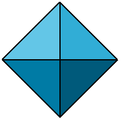

<body>
<p>You seem to be using a frames incapable browser. You can use the navigation buttons
(Next,&nbsp;Previous&nbsp;and&nbsp;Top) instead. Or find
your way through the programmers documentation by using the list below.</p>
<table border="0">
<tr><td rowspan="2"><img src="../images/weblogo175.gif" alt="CCP4 web logo"></td>
<td class="logohead">CCP4i: Graphical User Interface</td></tr>
<tr><td class="logotitle">Documentation for Programmers</td></tr>
</table>
<br /><br />
<table border="0">
<tr><td>
<a href="CloseSubFrame.html" target="_PROGMAIN">
<img border="0" class="navbutton" src="../images/3Dnexttr.gif" alt="next button"></a>
</td></tr>
</table>
<p>Index of CCP4i Commands</p>
<h3><a name="draw_interface"></a>CCP4i Commands to Draw a Task Interface</h3>
<a href="CloseSubFrame.html" target="_INDEXMAIN">

CloseSubFrame</a><br />
<a href="CreateExtendingFrame.html" target="_INDEXMAIN">
CreateExtendingFrame</a><br />
<a href="CreateInputFileLine.html" target="_INDEXMAIN">
CreateInputFileLine</a><br />
<a href="CreateLabinLine.html" target="_INDEXMAIN">
CreateLabinLine</a><br />
<a href="CreateLine.html" target="_INDEXMAIN">
CreateLine</a><br />
<a href="CreateLineTemplate.html" target="_INDEXMAIN">
CreateLineTemplate</a><br />
<a href="CreateOutputFileLine.html" target="_INDEXMAIN">
CreateOutputFileLine</a><br />
<a href="CreateTaskWindow.html" target="_INDEXMAIN">
CreateTaskWindow</a><br />
<a href="CreateToggleFrame.html" target="_INDEXMAIN">
CreateToggleFrame</a><br />
<a href="OpenFolder.html" target="_INDEXMAIN">
OpenFolder</a><br />
<a href="OpenSubFrame.html" target="_INDEXMAIN">
OpenSubFrame</a><br />
<a href="SetProgramHelpFile.html" target="_INDEXMAIN">
SetProgramHelpFile</a><br />
<h3><a name="interface_utilities"></a><font color="#cc3333">Task Interface
Utilities</font></h3>
<a href="DefineMenu.html" target="_INDEXMAIN">
DefineMenu</a><br />
<a href="DefineVariable.html" target="_INDEXMAIN">
DefineVariable</a><br />
<a href="GetType.html" target="_INDEXMAIN">
GetType</a><br />
<a href="GetTypeInfo.html" target="_INDEXMAIN">
GetTypeInfo</a><br />
<a href="GetValue.html" target="_INDEXMAIN">
GetValue</a><br />
<a href="GetWidget.html" target="_INDEXMAIN">
GetWidget</a><br />
<a href="PleaseWait.html" target="_INDEXMAIN">
PleaseWait</a><br />
<a href="SetValue.html" target="_INDEXMAIN">
SetValue</a><br />
<h3><a name="run_script_commands"></a><font color="#cc3333">CCP4i Run Script
Commands</font></h3>
<a href="Execute.html" target="_INDEXMAIN">
Execute</a><br />
<a href="GetTmpFileName.html" target="_INDEXMAIN">
GetTmpFileName</a><br />
<a href="RunNotification.html" target="_INDEXMAIN">
RunNotification</a><br />
<a href="TerminateScript.html" target="_INDEXMAIN">
TerminateScript</a><br />
<h3><a name="some_more"></a><font color="#cc3333">Some More
<!-- mgwt:****(don't know where to put these)--></font></h3>
<a href="CreateComScript.html" target="_INDEXMAIN">
CreateComScript</a><br />
<a href="CreateListBox.html" target="_INDEXMAIN">
CreateListBox</a><br />
<a href="FailNotification.html" target="_INDEXMAIN">
FailNotification</a><br />
</body>